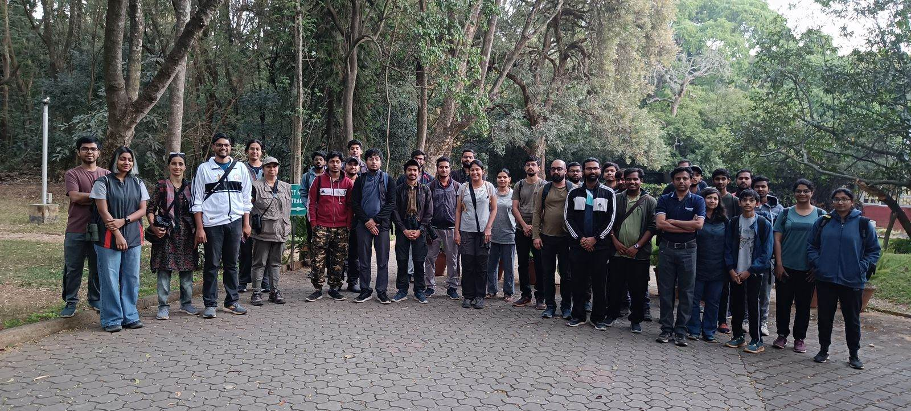

Featured this week
Common Indian Garden Snail
(Macrochlamys indica)

Mini Forest
Picture by Mohit Singh
The Nature Club is a group for students and residents of the IISc campus who share an interest in the local ecology. Since our campus is a unique habitat in the middle of Bengaluru, the club serves as a space to share observations and learn about what we see every day.
We keep things casual, whether it’s through guided walks, sharing photos, or just asking for an ID in the group chat. The campus landscape changes with the seasons, from the flowering trees to the arrival of different birds and insects. (And yes, the trees do produce a lot of fruits —just make sure you ID it correctly before you take a bite! XD)
We're always up to something, from night walks to weekend treks. Check out what we did this past year.

(Macrochlamys indica)
Mini Forest
Picture by Mohit Singh